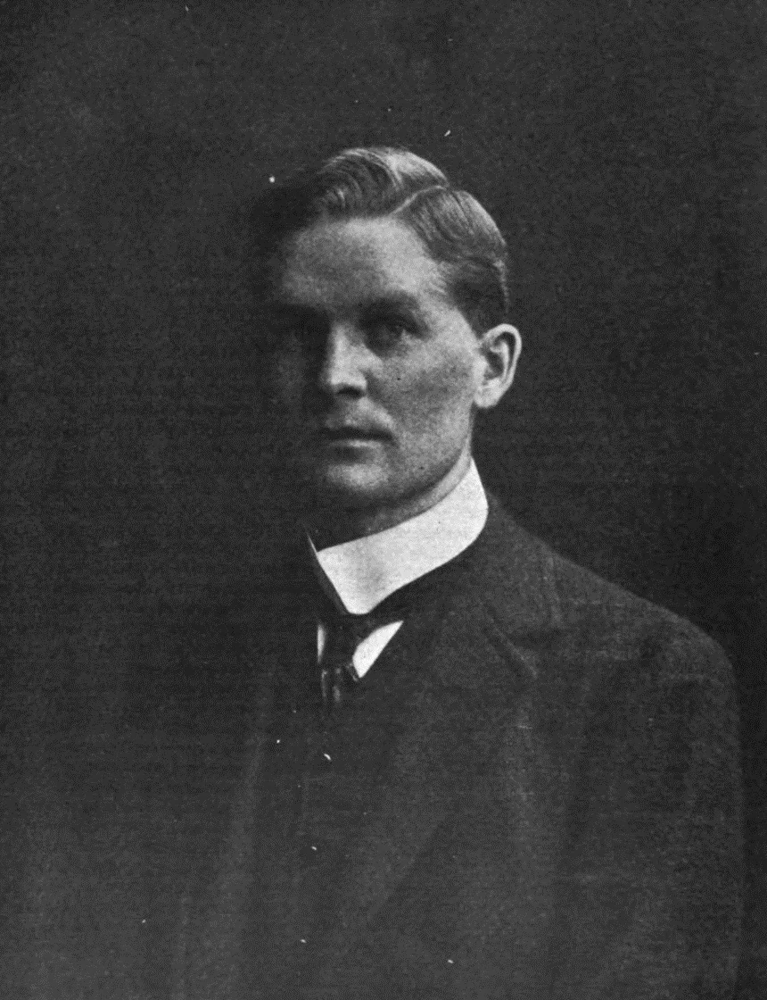
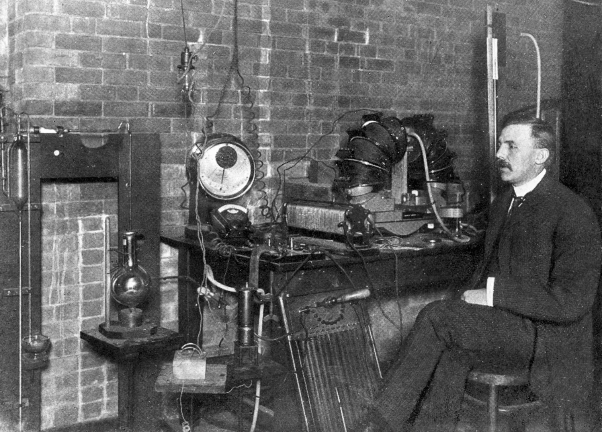
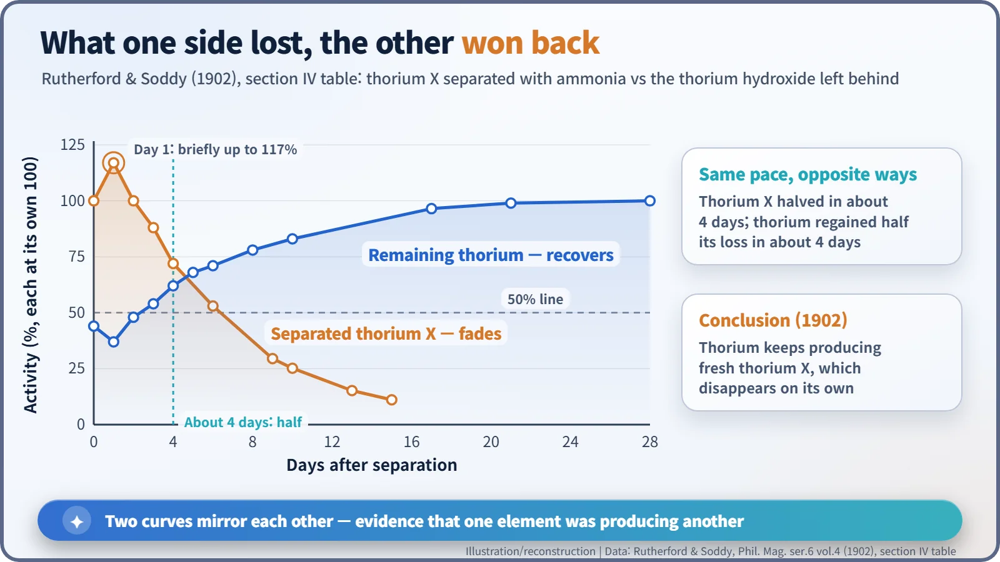
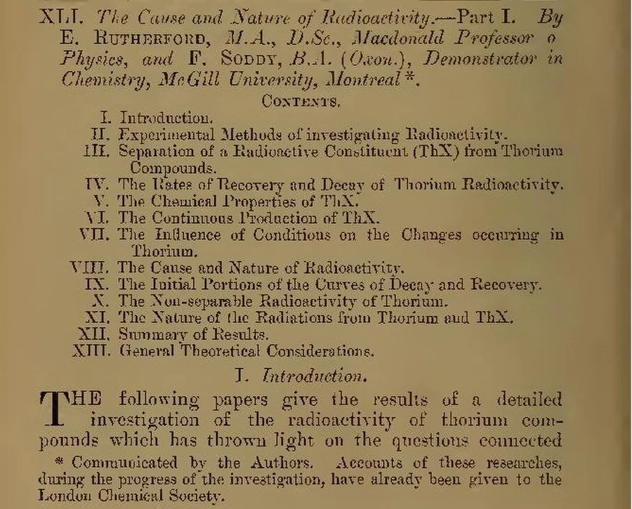
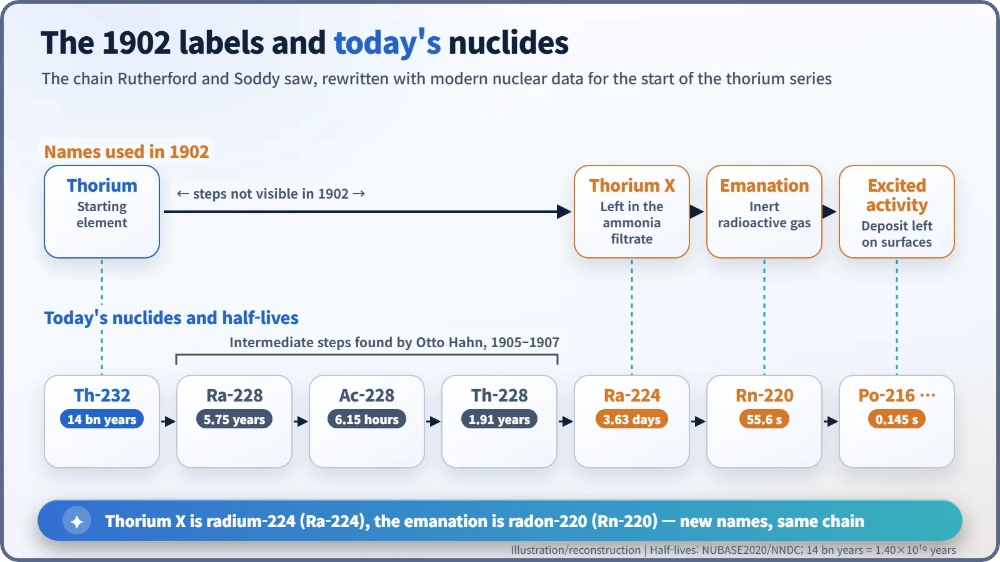

Nuclear History · 012
"Don't Call It Transmutation" — Rutherford and Soddy's Theory of Radioactive Change (1902)
A fading residue and a recovering thorium sample, measured day by day in Montreal, overturned chemistry's rule that elements never change.
Between 1901 and 1903 at McGill University in Montreal, the physicist Ernest Rutherford and the chemist Frederick Soddy separated a strongly radioactive substance, "thorium X", from thorium and watched it fade while the thorium regained its activity at the same pace. In 1902 they concluded that radioactive elements spontaneously transform into other elements. They avoided the alchemist's word "transmutation", but the idea overturned chemistry's oldest rule.
An alchemist's dream, in a Montreal lab
For centuries, alchemists bent over their furnaces trying to turn lead into gold. Modern chemistry filed that dream under superstition. By the nineteenth century its first commandment was clear: an element can be combined, separated and recombined, but it never turns into another element. Now imagine one of those alchemists peeking into a laboratory in Montreal in 1902. He would have found two young scientists holding evidence that elements really were changing into other elements, and worrying about what on earth to call it.
A physicist and a chemist in Montreal
Ernest Rutherford (1871–1937), a physicist from New Zealand, had been a professor of physics at McGill University since the autumn of 1898. In 1900 he reported that thorium compounds give off a radioactive gas, which he called the "emanation". That same year, in England, William Crookes chemically separated a radioactive ingredient from uranium and labelled it "uranium X". [2] [1]
Cracking the thorium puzzle needed someone who could separate and identify substances with a chemist's precision. As it happened, Frederick Soddy (1877–1956), an Oxford-trained chemist, had been appointed a demonstrator in chemistry at McGill in 1900. From around 1901 the two worked together. As the Dictionary of Canadian Biography puts it, Rutherford needed a chemist's knowledge, and Soddy "provided ideas as well as laboratory skills". [3] [6]


The thousandth part in the waste water
The clue came from the part of an experiment you would normally throw away. Add ammonia to a dilute solution of thorium nitrate and the thorium settles out as thorium hydroxide. Oddly, thorium recovered this way gave off less emanation than it should. So Rutherford and Soddy looked at the leftover liquid, evaporated it and heated away the ammonium salts.
The residue contained hardly any thorium, yet it was strongly radioactive. According to their paper, it weighed on the order of one-thousandth of the thorium salt they started with, but was "many hundred, in some cases over a thousand, times more active than an equal weight of thoria". Following Crookes, they gave it a provisional label: "thorium X". [1]
Two curves, mirror images
The real surprise came over the next few days. The separated thorium X grew steadily weaker. Meanwhile the thorium that had been robbed of it slowly regained its activity all by itself. Thorium X fell to half its activity in about four days, and the thorium recovered half of what it had lost in about the same four days. After about a month the thorium was back to full strength. [1]

The data table holds a curious detail. During the first day after separation, thorium X actually got stronger, rising to 117 per cent of its starting value, while the thorium dropped further, from 44 to 37 per cent. Today we know why: the next substances in the chain, produced by thorium X itself, were briefly building up. Rutherford and Soddy analysed these "initial portions" of the curves in a section of their own.
Just as striking, the rates hardly changed whether the material was dissolved or solid, heated or put through chemical treatment. Ordinary chemical reactions speed up or slow down with something as simple as temperature. This one did not care.
Their conclusion was unavoidable. Thorium was continuously producing fresh thorium X, and thorium X was disappearing on its own while giving off radiation. One element was, in effect, giving birth to another. [1]
"They'll have our heads off as alchemists"
A famous scene is attached to these months. According to a story Soddy told decades later, on the day they confirmed that the emanation was an inert gas that reacted with nothing, he blurted out: "Rutherford, this is transmutation!" Rutherford supposedly shot back: "Don't call it transmutation. They'll have our heads off as alchemists." The exchange comes from Soddy's recollections in a 1958 biography by Muriel Howorth, and the exact wording (even the exclamation at the start) varies from one telling to the next, so it is best treated as an anecdote rather than a record. [7]
What is certain is the language of the paper itself. "The Cause and Nature of Radioactivity", published in the Philosophical Magazine in 1902, never uses the word "transmutation". Instead it says that "radioactivity is at once an atomic phenomenon and accompanied by chemical changes in which new types of matter are produced", calls radioactivity "a manifestation of subatomic chemical change", and concludes that "the radioactive elements must be undergoing spontaneous transformation". They steered clear of the alchemist's vocabulary, but the meaning could not have been plainer. [1]

Atoms that turn into other atoms
A chemical reaction is like a dance in which atoms swap partners: the pairings change, but every dancer leaves the floor as the same person. What Rutherford and Soddy saw was different. The atoms themselves were becoming other atoms. Today we call this radioactive decay. It happens not among the outer electrons, which handle chemistry, but at the very centre of the atom, in the nucleus. That is why heat and chemical treatment made no difference.
Their labels translate neatly into modern names. "Thorium X" is radium-224, and the thorium "emanation" is radon-220. What they could not see in 1902 was that further hidden steps sit between thorium and thorium X; those gaps were filled in a few years later, notably by Otto Hahn.

| Name in 1902 | Modern nuclide | Half-life |
|---|---|---|
| Thorium | Thorium-232 | 1.40 × 1010 years |
| Thorium X | Radium-224 | 3.63 days |
| Thorium emanation | Radon-220 | 55.6 seconds |
Physics, not alchemy
In 1903, in a paper called "Radioactive Change", the pair extended the idea to uranium and radium. Soddy then moved to London, where he showed with William Ramsay that radium produces helium. Within a few years the transformation theory had become the standard explanation of radioactivity. Rutherford received the 1908 Nobel Prize in Chemistry for his investigations into the disintegration of the elements, and was reportedly amused that a physicist had been given the chemistry prize. Soddy introduced the idea of isotopes in 1913 and received the 1921 Nobel Prize in Chemistry. [2] [3] [4] [5]
One point deserves emphasis. Rutherford and Soddy did not change one element into another by human hand; they recognised a transformation that nature was already carrying out. Artificially transmuting an element came only in 1919, through Rutherford's own experiments. Behind the careful wording chosen to avoid sounding like alchemists, the first chapter of the story of the atomic nucleus had begun.